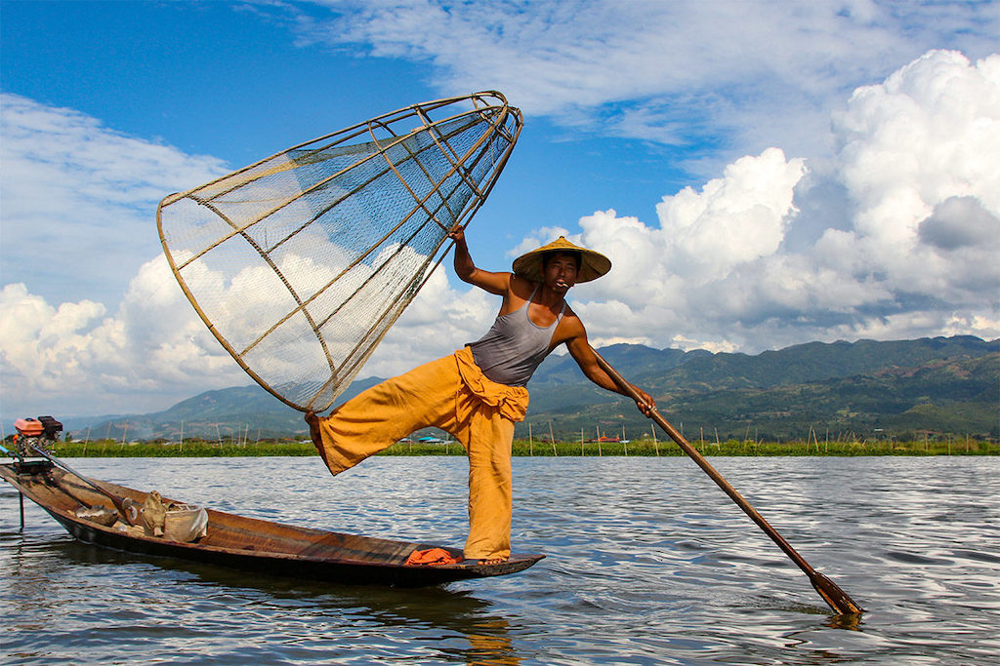
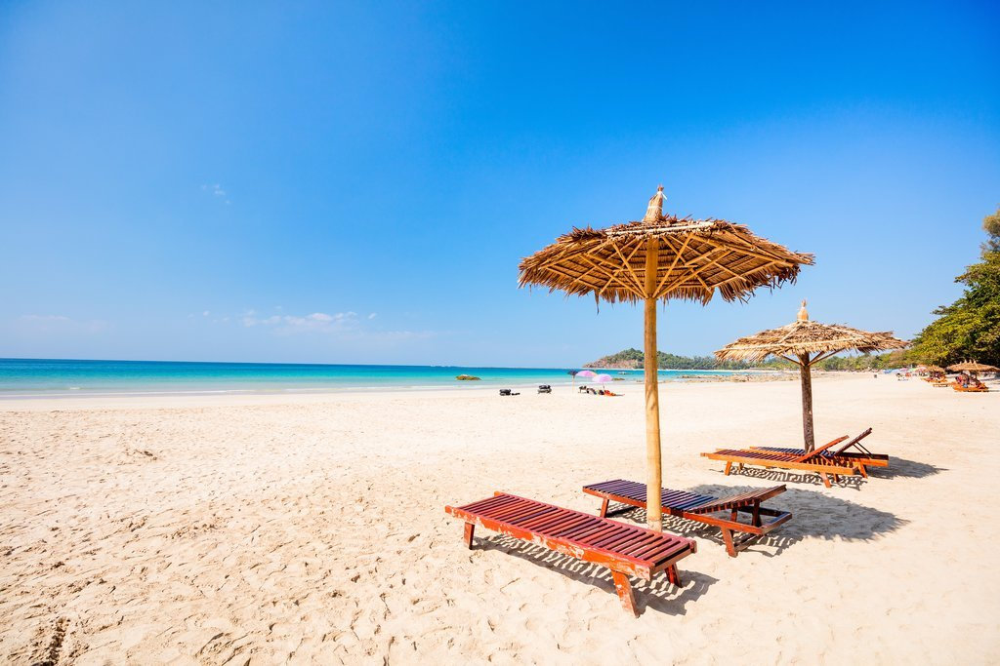
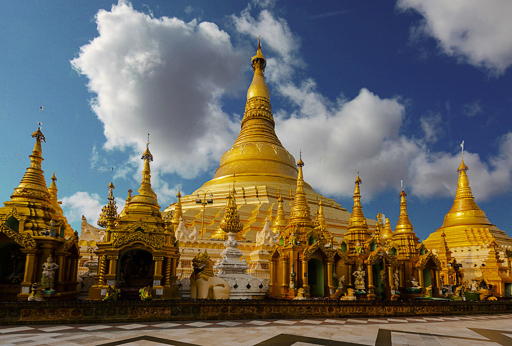
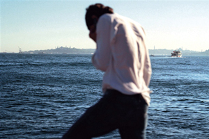
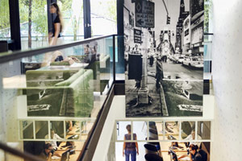
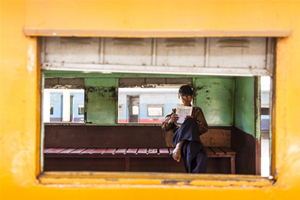

Voyage en Birmanie, voyage au pays des pagodes de bois,
d’or et de stuc… Rangoon, Pagan, Mandalay…
On a peine à croire que le régime y est si dur,
tant tout y parait rond : son alphabet, la forme et le son de la harpe Saung,
la lumière au lever du soleil, les pagodes de Bagan,
les bols à offrandes et les ombrelles des moines, le Rocher d’or de Kyaik-Hti-Yo,
la cuisine birmane, étonnamment douce, à l’image de son curry parfumé sans aucune épice
CONTACTEZ UN CONSEILLER SPÉCIALISTE BIRMANIE
06 XX XX XX XX

Mandalay, Pagan, Lac Inle & Rangoon - Premier voyage en Birmanie
La ferveur bouddhiste de Mandalay, l’effervescence de Rangoon
11 JOURS, DE 2900 À 3700 €

Des pagodes à la plage - Un hiver birman en famille
Rangoon, Pagan, Lac Inle, Pindaya, Ngapali : des pagodes, des Bouddhas et la plage
14 JOURS, DE 3500 À 4400 €

Des pagodes à la plage - Birmanie et Thaïlande en famille
De Rangoon à Koh Samui, côté ville et plage, profiter du regard de vos enfants sur l’Asie
18 JOURS, DE 4200 À 5300 €
Ce que nous faisons pour nos clients en Birmanie

Entre Célia et la Birmanie,
c’est une histoire de cœur.
Un pays qu’elle aime avant tout pour la bienveillance naturelle des Birmans,
ainsi que pour la grande beauté des paysages, l
es traditions bouddhistes et la cuisine parfumée.
A Rangoon, elle prend contact avec vous dès votre arrivée et vous assiste tout au long de votre périple,
qu’il s’agisse de faire appel aux services d’un guide privé dans les anciennes capitales,
de dénicher les meilleures tables de Rangoon et Mandalay ou les plus beaux sentiers de randonnée autour du lac Inle…

Véritable spécialistes et amoureux du pays,
nos conseillers Birmanie vous reçoivent avec passion pour construire avec vous l'itinéraire
que vous souhaitez. Sandrine se rappellera de son premier voyage en 1998,
encensera la bienveillance des birmans,
vous parlera du Lac Inlé (un incontournable) et vous conseillera un voyage de 2 semaines
pour profiter pleinement de tout ce que le pays a à offrir.

Amoureux du pays et de l'Asie,
passionnés de voyages et de rencontres multiculturelles,
ou adeptes de la vie nocturne et de la culture birmane,
nos expatriés français sont devenus au fil des années de vrais locaux,
connaissent Rangoon par cœur ou presque et,
proposent une véritable immersion dans cette ville fascinante et en pleine effervescence.
On y découvre la ville à travers ses lieux à la mode, ses quartiers confidentiels,
sa cuisine de rue, ses marchés…